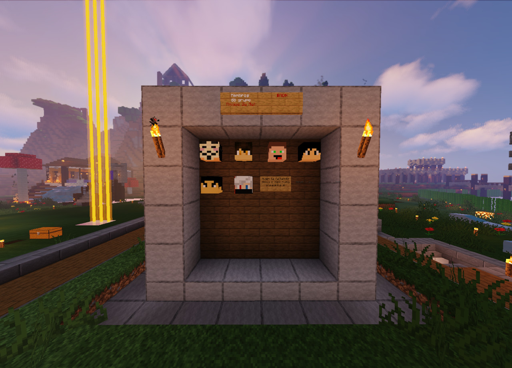
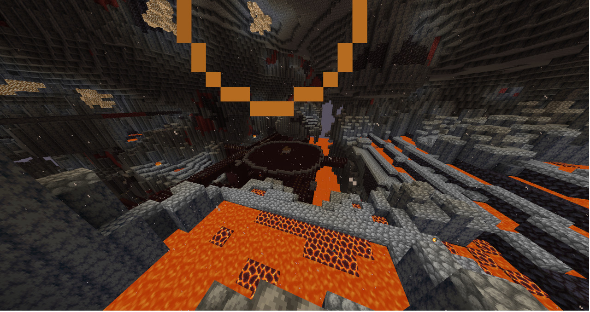

História
O grupo ADN nasceu em meados de 2015, com apenas um grupo de desconhecidos que começou a jogar Minecraft via Skype, bagunçando em um servidor chamado SkySurvival, [Contribuições aqui]. Por fim, o grupo ADN nunca morreu, todos nos tornamos grandes amigos e até hoje confraternizamos e conversamos sobre coisas que vão muito além do Minecraft, assim como o jogo todos nós evoluimos e assim vamos seguindo. #ADN

Servidor
Atualmente estamos com um servidor Whitelist ativo com o mesmo nome do nosso grupo, MinhoLoL está a frente dos Plug-ins os demais estão sobrevivendo e criando (Minecraft né hehe).
Mudanças e atualizações
Farm de Wither-Skeleton
Na última segunda-feira (12), finalizamos nossa farm de Wither-Skeleton para conseguirmos as tao raras cabeças de Wither e assim invocar o Wither-Boss, vamos ver no que vai dar!
